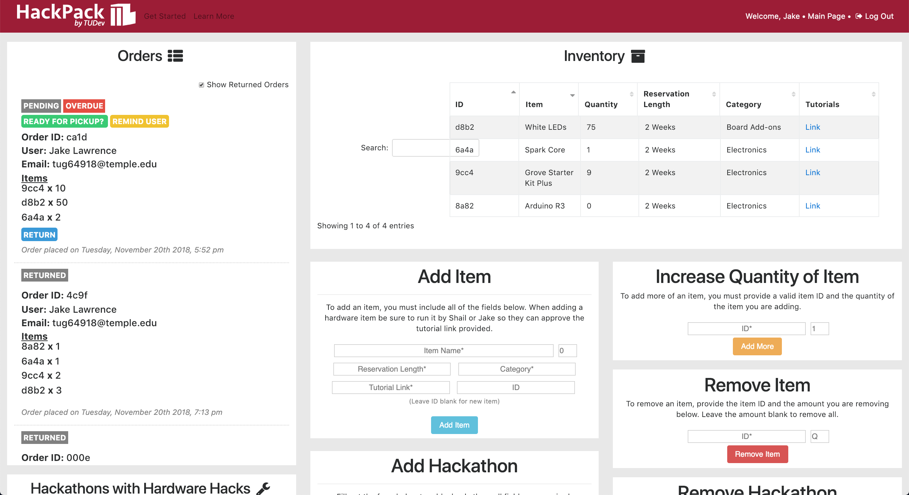
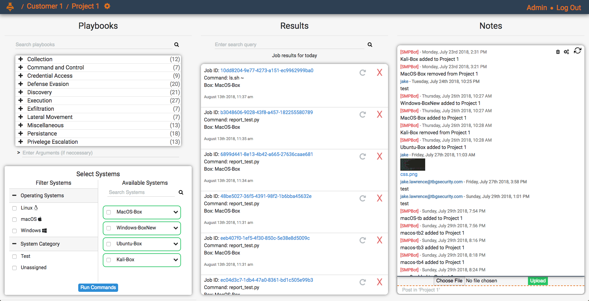
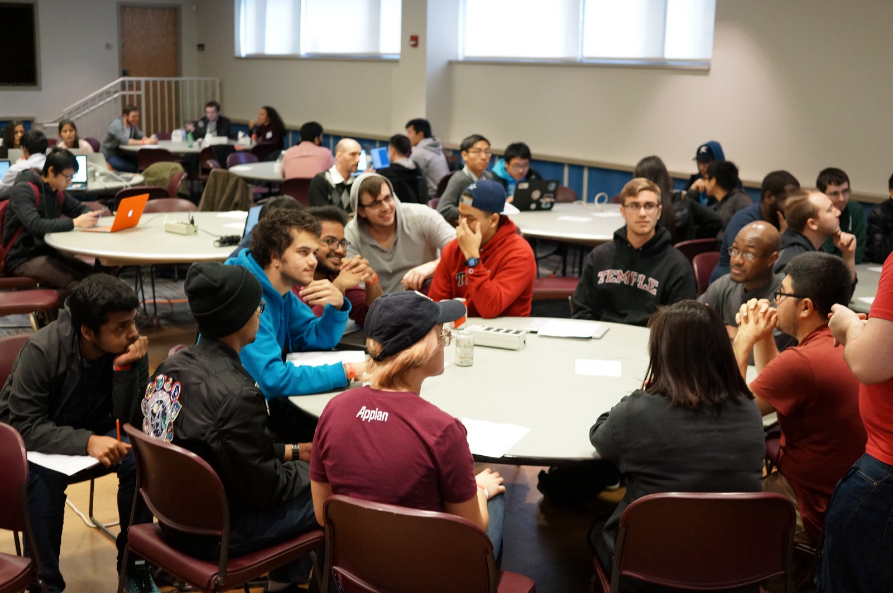
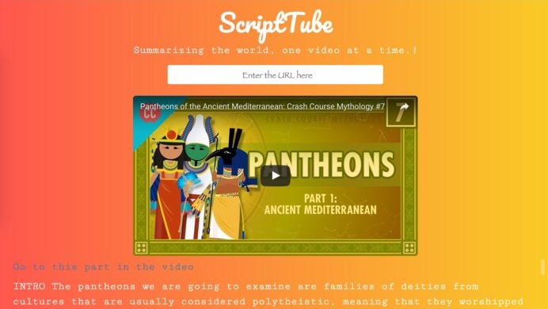
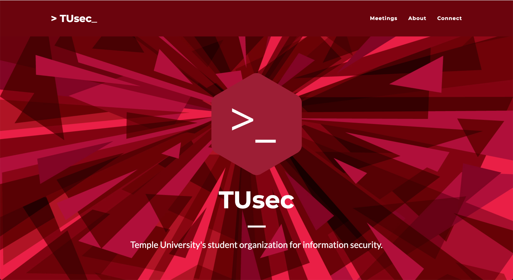

Jake Lawrence
Jake Lawrence
About Me
I am a Senior at
Temple University
studying
Computer Science.
I am currently the Co-President of
TUDev,
Temple's CS / Hacker club. I am the former President of TUSec,
Temple's InfoSec club, which has now merged into TUDev. I am the co-founder
of
Hack4Impact
Temple, which is an organization that develops software for nonprofits.
From May 2017 to November 2018, I developed penetration testing utilities for TBG Security. I am an incoming Software Engineering Intern for JPMorgan Chase & Co. for the Summer of 2019. I currently maintain and update TUDev.org.
I will be working on the web development team for TraffickCam under the supervision of Professor Richard Souvenir. You can read more about TraffickCam here and here.
I was a coordinator for Local Hack Day Philly, a hackathon at Temple. Also, I was the sole developer for hackpack.tudev.org, a hardware checkout platform for Temple students.
Feel free to reach out to me if you'd like to talk about anything I've worked on or anything of interest to you!
From May 2017 to November 2018, I developed penetration testing utilities for TBG Security. I am an incoming Software Engineering Intern for JPMorgan Chase & Co. for the Summer of 2019. I currently maintain and update TUDev.org.
I will be working on the web development team for TraffickCam under the supervision of Professor Richard Souvenir. You can read more about TraffickCam here and here.
I was a coordinator for Local Hack Day Philly, a hackathon at Temple. Also, I was the sole developer for hackpack.tudev.org, a hardware checkout platform for Temple students.
Feel free to reach out to me if you'd like to talk about anything I've worked on or anything of interest to you!
Projects I've Worked On

HackPack is a web app designed for TUDev members to check out and use hardware for
their personal software projects. The inspiration for HackPack stems from the fact
that many students wish to engage in software development alongside hardware but
they are not able to or do not wish to buy expensive hardware to learn these skills.
Currently, HackPack can be found in production at
hackpack.tudev.org
and its source code is viewable at
github.com/tudev/hackpack.
HackPack was built with Python alongside
Flask
for the backend,
MongoDB
as the database layer, and various frontend technologies (HTML, CSS,
JS, Bootstrap Grid).
TBG Security SMP (Stinger Management Platform)

The Stinger Management Platform, SMP for short, is a full stack web app and client
script that enables the use of a suite of auditing modules for the penetration
testing and auditing of a network of client machines. The web app allows users
to manage machines on internal or external networks, run tests on these machines
through pre-written modules, and view reports on the results of these modules.
These modules are executed through a custom C2 script that is run on client machines
and they were based on the
MITRE ATT&K Matrix.
The web app was built with Python alongside
Flask
for the backend,
MongoDB
as the DB layer, and various frontend technologies (HTML, CSS, JS, Bootstrap grid).
The C2 script was written in Python. I developed this product whilst working as a
Software Engineering Intern at the great company
TBG Security.

Local Hack Day Philly
was a one-day hackathon organized by
TUDev
at
Temple University
where over 100 college students from the Greater Philadelphia area
came together to build awesome software. As a coordinator I worked on ensuring a
successful event through various responsibilities that would frankly be too boring
for most people to list.

ScriptTube was a project that myself and a team of three others developed at
HackNY
Spring 2017. The goal of the project was to allow people to generate annotated,
shortened summaries of YouTube videos. What I mean by annotated is that in the
summaries provided, links to the time in the video were provided. This means that if
the summary of a video on rubber ducks was generated and in the summary there was a
sentence talking about the inventor of the rubber duck, a link would be provided alongside
this sentence which when clicked upon would bring the user to the time in the video
that was talking about the inventor of the rubber duck. ScriptTube won Greatest Time
Saver at HackNY Spring 2017. It was built with Python alongside
Flask
for the backend, and various web technologies for the frontend
(HTML, CSS, JS, Bootstrap grid).
tusec.org

TUSec was in need of a website and I wanted to practice some of my newly learned
web development skills so I volunteered to create this website for them. The site
was made with various frontend technologies (HTML, CSS, Bootstrap). It is no longer
in production due to the fact that TUSec was merged into TUDev but I have taken the liberty
of hosting an archived version of the site
here.